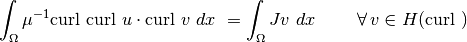
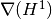
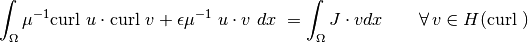
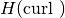
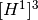
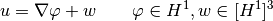
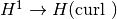
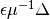
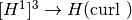
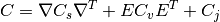

Advanced Examples - Auxiliary Maxwell Solver¶
In the “advanced” folder, you can find a series of python files that will guide you through the last part of the workshop.
We will again consider a problem we already heard about on Monday:
Find  such that
such that

As we have already seen on Monday, in order to make the problem well posed, we need to add an  term.
term.
This means we have a very large near-nullspace . This is the main obstacle in finding solvers for this equation.

So far, we have used the BDDC preconditioner for this problem, which worked fine enough. However, it leaves the coarse grid problem to be solved exacly, wich is not a scalable approach.
The auxiliary space preconditioner is based on the existence of regular decompositions of  functions into an  and the gradient of an function:

We also have a decomposition on the discrete level, but we additionally make a small, high-frequency error :
The components for the preconditioner are:
- : To adress , we choose Jacobi-preconditioner for the matrix.
- : The discrete gradient matrix, 
- : A preconditioner for  in
- : The embedding 
- : A preconditioner for in
Putting these components together:¶

There are plenty of fast, robust and scalable solvers for the Laplacian. With this method we can extend their applicability also to problems
[ ]: